qnorm(0.975)[1] 1.959964We will often be interested in random variables that are formed by transformations or combinations of other random variables.
More generally, we are interested in determining the distribution of the random variable \(Y\) if
\[ Y = f(X_1, X_2, \dots, X_n) \]
and we already know the distributions of \(X_1, X_2, \dots, X_n\). There are methods for working out the distribution of \(Y\) in many such situations. Often it is possible to figure out the distribution of variables formed this way, but the methods require more techniques of probability than we will develop in this course. We will generally be satisfied with one of the following approaches:
In this section we will make use of the fact that each of our familiar distributions has a function in R that lets us simulate randomly sampling data from that distribution.
X <- runif(10000, 0,1)
Y <- runif(10000, 0,1)
gf_dhistogram( ~ X , main = "Sample from Unif(0,1)",
binwidth = .05, center = 0.025)
gf_dhistogram( ~ Y , main = "Another sample from Unif(0,1)",
binwidth = .05, center = 0.025)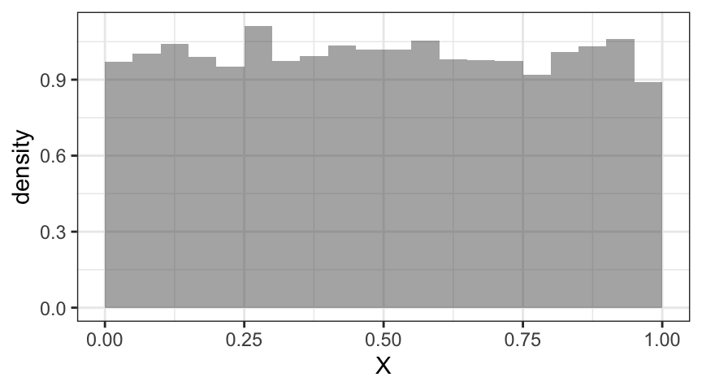
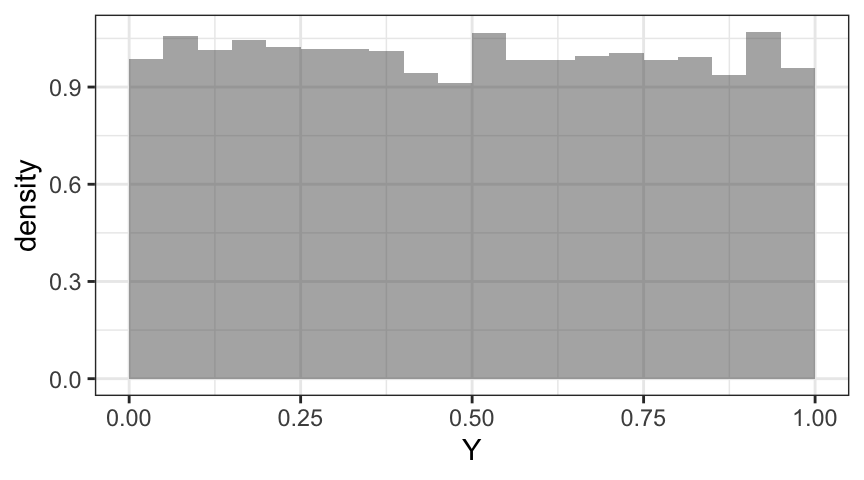
S <- X + Y
P <- X * Y
gf_dhistogram( ~ S , main = "Sum of two iid Unif(0,1) rvs",
binwidth = 0.1, center = 0.05)
gf_dhistogram( ~ P , main = "Product of two iid Unif(0,1) rvs",
binwidth = 0.05, center = 0.025)
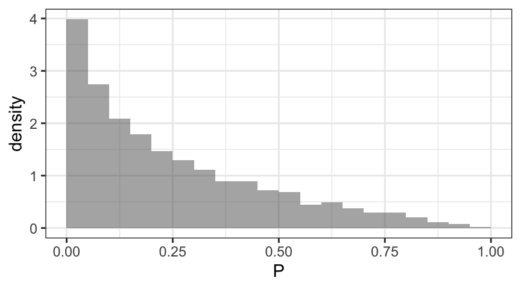
It is important that we have created x and y independently. Independent random variables that have the same distribution are called independent identically distributed (iid) random variables. As an illustration of an extreme situation where the variables in our sum are not independent, let’s use the values of x in both roles:
S2 <- X + X
P2 <- X * X
gf_dhistogram( ~ S2 , main = "Sum of two non-iid Unif(0,1) rvs", binwidth = 0.1, center = 0.05)
gf_dhistogram( ~ P2 , main = "Product of two non-iid Unif(0,1) rvs", binwidth = 0.05, center = 0.025)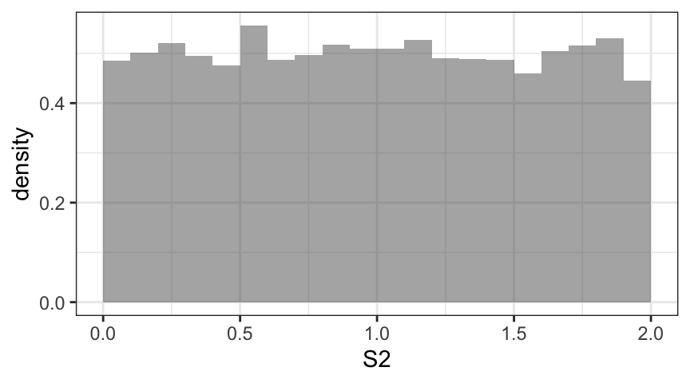
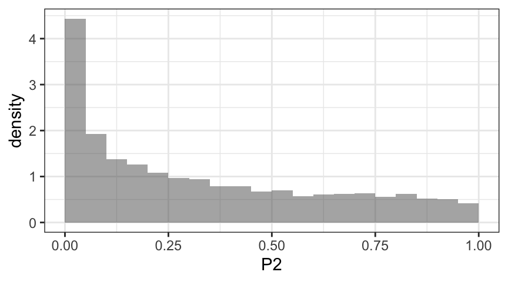
Notice how different the resulting distributions are, especially for the sum.
Similar procedures can be used to give an approximate distribution for any combination of random variables that we can simulate.
Sometimes it is not necessary to know everything about a distribution. Sometimes knowing the mean or variance suffices, and there are several common situations where the mean and variance are easy to calculate
The easiest of these is a linear transformation of a random variable.
If \(X\) is a random variable with known mean and variance, then
\[ \begin{aligned} \E(a X + b) &= a \E(X) + b \; \mbox{, and} \\ \Var(a X + b) &= a^2 \Var (X) \; . \end{aligned} \]
These are actually pretty easy to prove from the definitions of mean and variance. (Just write down the integrals and do some algebra.) But these results also match our intuition.
\[ \begin{aligned} \E(X + b) &= \int_{-\infty}^{\infty} (x+b) f(x) \; dx = \int_{-\infty}^{\infty} x f(x) \; dx + \int_{-\infty}^{\infty} b f(x) \; dx = \E(X) + b \\ \Var(X+b) &= \int_{-\infty}^{\infty} (x + b - (\mu + b))^2 f(x) \; dx = \int_{-\infty}^{\infty} (x - \mu)^2 f(x) \; dx = \Var(X) \end{aligned} \]
\[ \begin{aligned} \E(aX) &= \int_{-\infty}^{\infty} ax f(x) \; dx = a \int_{-\infty}^{\infty} x f(x) \; dx = a \E(X) \\ \Var(aX) &= \int_{-\infty}^{\infty} (ax - a\mu)^2 f(x) \; dx = a^2 \int_{-\infty}^{\infty} (x-\mu)^2 f(x) \; dx = a^2 \Var(X) \end{aligned} \]
Example 5.1 Q. Suppose \(X\) has a mean of 5 and a standard deviation of 2. What are the mean and standard deviation of \(3 X + 4\)?
A. \(\E(3 X + 4) = 3 \E(X) + 4 = 3 \cdot 5 + 4 = 19\)
\(\Var(3 X + 4) = 3^2 \Var(X) = 3^2 \cdot 2^2 = 36\). So the standard deviation of \(3X + 4\) is \(\sqrt{36} = 6\). Notice that \(6 = 2 \cdot 3\).
Example 5.2 Q. Suppose \(X\) has a mean of 5 and a standard deviation of 2. What are the mean and standard deviation of $7 - 2 X $?
A. \(\E(7 - 2X) = \E(- 2 X + 7) = - 2 \E(X) + 7 = -2 \cdot 5 + 7 = -3\)
\(\Var(-2 X + 7) = (-2)^2 \Var(X) = 4 \cdot 2^2 = 16\). So the standard deviation of \(7 - 2X\) is \(\sqrt{16} = 4\). Notice that \(4 = |-2| \cdot 2\).
The most important combination of two random variables is a sum.
Theorem 5.1 Mean and variance of a sum of independent random variables
Let \(X\) and \(Y\) be two random variables with known means and variances, then
\[ \begin{aligned} \E(X + Y) &= \E(X) + \E(Y) \; \mbox{, and} \\ \Var(X + Y) &= \Var (X) + \Var(Y) \; \mbox{, provided $X$ and $Y$ are independent.} \end{aligned} \]
That is,
The independence condition for the variance rule is critical. 1
Example 5.3 Q. Suppose \(X\) and \(Y\) are independent random variables with means 3 and 4 and standard deviations 1 and 2. What are the mean and standard deviation of \(X + Y\)?
A. \(\E(X+Y) = 3 + 4\). \(\Var(X + Y) = 1^2 + 2^2 = 5\), so \(\SD(X + Y) = \sqrt{5} \approx 2.236\).
Example 5.4 Q. Let \(X \sim \Unif(0,1)\) and \(Y \sim \Unif(0,1)\) be independent random variables and let \(S = X+Y\). What are the mean and variance of \(S = X + Y\)?
A. \(\E(S) = \E(X) + \E(Y) = \frac12 + \frac12 = 1\). \(\Var(S) = \Var(X) + \Var(Y) = \frac1{12} + \frac1{12} = \frac16\).
Note that this matches the mean and variance of a \(\Tri(0,2,1)\)-distribution, since \[
\frac{ 0 + 2 + 1}{3} = 1 \;,
\] and \[
\frac{ 0^2 + 2^2 + 1^2 - 0 \cdot 2 - 0\cdot 1 - 1\cdot 2}{18}
= \frac{3}{18} = \frac16 \;.
\]
In fact, it can be shown that \(S \sim \Tri(0,2,1)\).
If we express the rule for variances in terms of standard deviations we get
Theorem 5.2 The Pythagorean Theorem for standard deviations.
If \(X\) and \(Y\) are independent random variables, then \[ \SD(X+Y) = \sqrt{ \SD(X)^2 + \SD(Y)^2 }\; . \] The independence condition plays the role of the right triangle condition in the usual Pythagorean Theorem.
The results in the preceding sections can be combined and iterated to get results for arbitrary linear combinations of random variables.
Theorem 5.3 Expected value and variance for linear combinations
Let \(Y = a_1 X_1 + a_2 X_2 + \cdots + a_k X_k\), then
\[ \begin{aligned} \E(Y) & = a_1 \E(X_1) + a_2 \E(X_1) + \cdots a_k \E(X_k) \\[2mm] \Var(Y) & = a_1^2 \Var(X_1) + a_2^2 \Var(X_1) + \cdots a_k^2 \Var(X_k) \; , \\ & \qquad \mbox{provided $X_1, X_2, \dots, X_k$ are independent.} \end{aligned} \]
Example 5.5 Q. Suppose the means and standard deviations of three independent random variables are as in the table below.
| mean | standard deviation | |
|---|---|---|
| \(X\) | 100 | 15 |
| \(Y\) | 120 | 20 |
| \(Z\) | 110 | 25 |
Determine the mean and standard deviation of \(X + 2Y - 3Z\).
A. The mean is \(100 + 2 (120) - 3(110) = 10\).
The variance is \(1^2\cdot 15^2 + 2^2 \cdot 20^2 + (-3)^2 \cdot 25^2 = 7450\), so the standard deviation is \(\sqrt{ 7450} = 86.3\).
Normal distributions are special because
Special Properties of Normal Distributions
Linear combinations of independent normal random variables are again normal.
Sums of iid random variables from any distribution are approximately normal provided the number of terms in the sum is large enough.
This result follows from what is known as the Central Limit Theorem. The Central Limit Theorem explains why the normal distributions are so important and why so many things have approximately normal distributions.
This means that just knowing the mean and standard deviation tells us everything we need to know about the distribution of the linear combination of normal random variables.
Example 5.6 Let \(X \sim \Norm(10,2)\) and \(Y\sim \Norm(12,4)\). If \(X\) and \(Y\) are independent, then
\[ X + Y \sim \Norm(10 + 12, \sqrt{2^2 + 4^2}) = \Norm(22, 4.47) \;. \]
Example 5.7 Let \(X \sim \Norm(10,2)\) and \(Y\sim \Norm(12,4)\). If \(X\) and \(Y\) are independent, then
\[ X - Y \sim \Norm(10 - 12, \sqrt{2^2 + 4^2}) = \Norm(-2, 4.47)\; . \]
Example 5.8 Q. Use simulation to illustrate the previous two results.
A.
X <- rnorm(5000, 10, 2)
Y <- rnorm(5000, 12, 4)
Sum <- X + Y
Diff <- X - Y
fitdistr(Sum, "normal")
fitdistr(Diff, "normal")
gf_dhistogram(~ Sum) |> gf_fitdistr(dist = "norm")
gf_dhistogram(~ Diff) |> gf_fitdistr(dist = "norm")
gf_qq(~ Sum)
gf_qq(~ Diff) mean sd
21.92388499 4.44989818
( 0.06293106) ( 0.04449898) mean sd
-1.91871505 4.45710149
( 0.06303293) ( 0.04457101)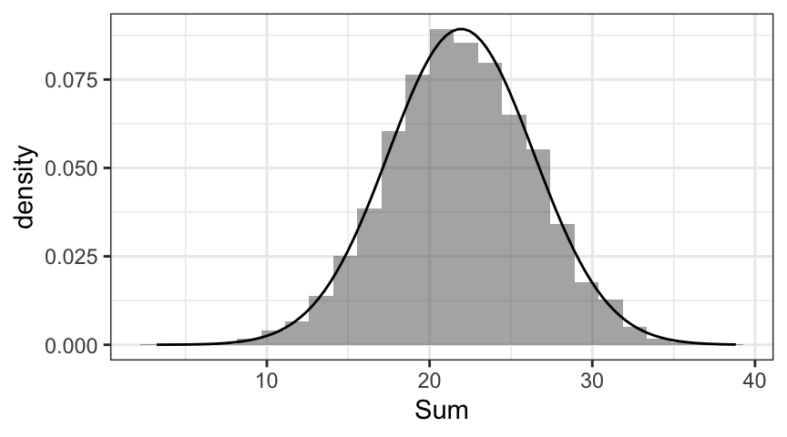
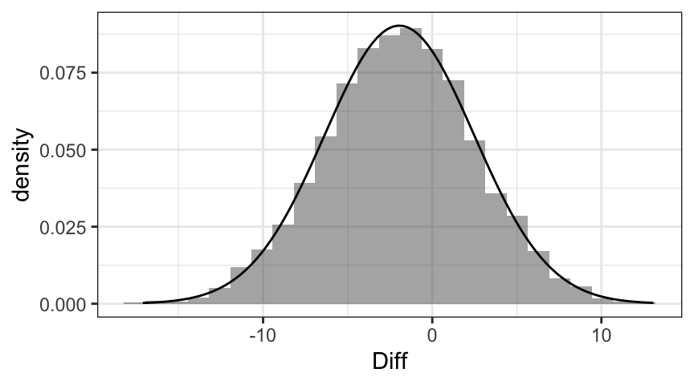
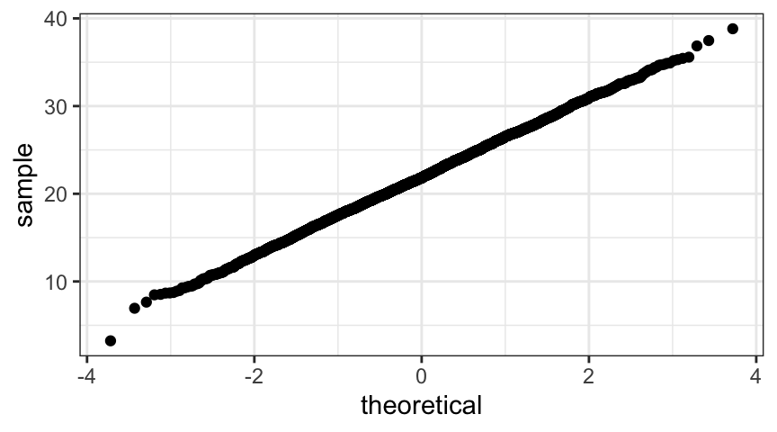

Example 5.9 Let \(X_{1}, X_{2}, \dots X_{12}\) be twelve independent \(\Unif(0,1)\)-random variables. Consider \(S = \sum_{i = 1}^{12} X_i\).
Since \(\E(X_i) = \frac12\) and \(\Var(X_i) = \frac{1^2}{12} = \frac1{12}\)
\[ \begin{aligned} \E(S) &= \frac12 + \frac12 + \cdots \frac12 = 12 \cdot \frac12 = 6 \\ \Var(S) & = \frac1{12} + \frac1{12} + \cdots \frac 1{12} = 12 \cdot \frac1{12} = 1 \end{aligned} \]
Furthermore, the normal approximation for \(S\) is quite good:
X1 <- runif(5000,0,1); X2 <- runif(5000,0,1); X3 <- runif(5000,0,1)
X4 <- runif(5000,0,1); X5 <- runif(5000,0,1); X6 <- runif(5000,0,1)
X7 <- runif(5000,0,1); X8 <- runif(5000,0,1); X9 <- runif(5000,0,1)
X10 <- runif(5000,0,1); X11 <- runif(5000,0,1); X12 <- runif(5000,0,1)
S <- X1 + X2 + X3 + X4 + X5 + X6 + X7 + X8 + X9 + X10 + X11 + X12
fitdistr(S, "normal")
gf_dhistogram(~S) |> gf_fitdistr(dist = "norm")
gf_qq(~S) mean sd
6.00157499 1.01166110
(0.01430705) (0.01011661)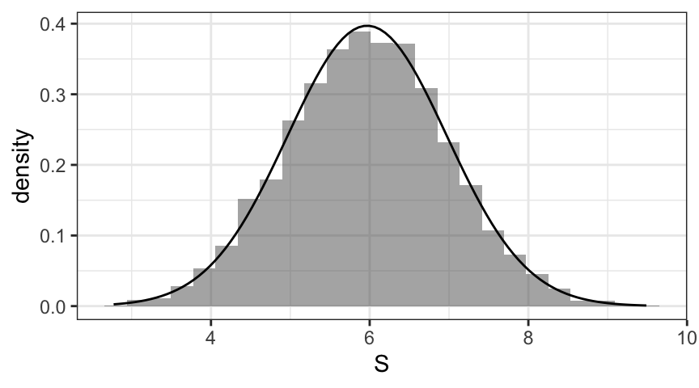
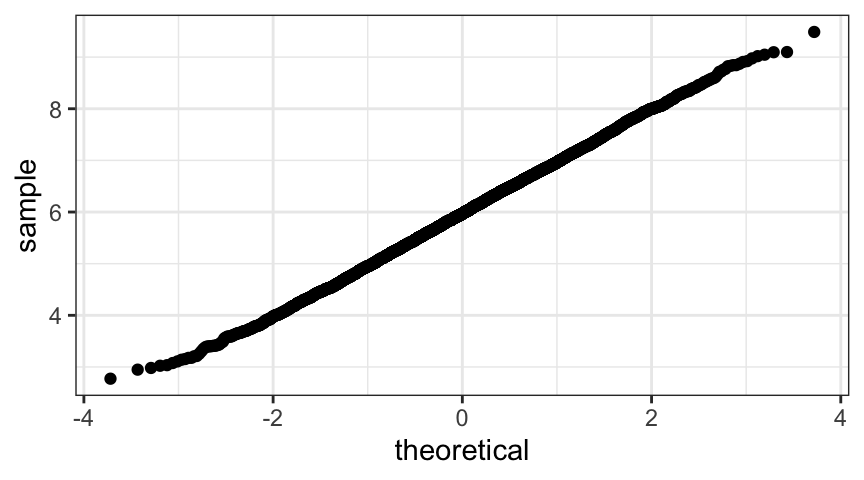
This means that \(S - 6 \approx \Norm(0,1)\). This has been used in computer software as a relatively easy way to simulate normal data given a good pseudorandom number generator for \(\Unif(0,1)\).
As important as data are in statistics, typically we are not interested in our data set, but rather in what we can learn from our data about some larger situation. For example,
We have now developed enough background to begin learning how this process works. We begin by introducing some key terms:
population The collection of individuals, objects, or processes we want to know something about.
parameter A number that describes (a feature of) a population.
In typical applications, parameters are unknown and data are collected for the purpose of estimating parameters.
sample The collection of individuals, objects, or processes we have data about. Ideally, the sample is a well chosen subset of the population.
statistic A number that describes (a feature of) a sample.
sampling distribution The distribution of a statistic under random sampling.
The process of random sampling leads to a random sample, from which a statistic could be computed. Since that number depends on a random process (sampling), it is a random variable. The sampling distribution should not be confused with the distribution of an individual sample (nor with the distribution of the population).
Example 5.10
Quality assurance engineers test a few parts to make a decision about whether the production process is working correctly for all the parts.
Automobile manufacturers crash a small number of vehicles to learn how their (other) cars might perform in an accident.
Public opinion pollsters survey a (relatively) small number of people in order to learn about the opinions of millions of people.
The mean weight of a dime can be estimated from the weights of 30 dimes.
Theorem 5.4 The Central Limit Theorem
If \(X_1, X_1, \dots, X_n\) is an iid random sample (of some quantitative variable) from a population with mean \(\mu\) and standard deviation \(\sigma\), then the sampling distribution of the sample mean or sample sum of a large enough random sample is approximately normally distributed. In fact,
The approximations are better
and are exact when the population distribution is normal.
The Central Limit Theorem is illustrated nicely in an applet available from the Rice Virtual Laboratory in Statistics (http://onlinestatbook.com/stat_sim/sampling_dist/index.html).
Important things to note about the Central Limit Theorem
When the goal of sampling is to estimate a parameter, it is handy to have the following terminology:
In this section, our estimand is the mean of the population (\(\mu\)) and our estimator is \(\mean X\), the mean of a random sample. We will use \(\mean x\) to denote the estimate computed from a particular sample; this is an estimate.
Typically we will not know \(\sigma\) or \(\mu\). (To know them, one would typically need to know the entire population, but then we would not need to use statistics to estimate \(\mu\) because we would know the exact answer.) But for the moment, let’s pretend we live in a fantasy world where we know \(\sigma\).
Example 5.11 Suppose the standard deviation of the weight of all dimes in our sack of dimes is \(0.03\). If we collect a random sample of 25 dimes, then
\[ \mean X \approx \Norm(\mu, \frac{\sigma}{\sqrt{n}}) = \Norm(\mu, 0.006) \]
so
\[ \mean X - \mu \approx \Norm(0, \frac{\sigma}{\sqrt{n}}) = \Norm(0, 0.006) \;. \]
This means that
\[ \begin{aligned} \Prob(| \mean X - \mu | \le 0.006) &\approx 0.68 \\[4mm] \Prob(| \mean X - \mu | \le 0.012) &\approx 0.95 \end{aligned} \]
So we can be quite confident that our sample mean will be within 0.012 g of the \(\mu\), mean weight of all dimes in the sack.
Expressed in words, the claim is that 95% of random samples lead to a sample mean that is within 0.012 g of the true mean. Of course, that means 5% of samples lead to a sample mean that is farther away than that. For any given sample, there is no way to know if it is one of the 95% or one of the 5%.
The typical way of expressing this is with a confidence interval. The key idea is this:
If \(\mean X\) is close to \(\mu\), then \(\mu\) is close to \(\mean X\).
So an approximate 95% confidence interval is \[ \mean x \pm 2 SE = \mean x \pm 2 \frac{\sigma}{\sqrt{n}} \] or more precisely \[ \mean x \pm 1.96 \frac{\sigma}{\sqrt{n}} \] because
qnorm(0.975)[1] 1.959964Notice the switch from \(\mean X\) to \(\mean x\). We used \(\mean X\) when we were considering the random variable formed by taking a random sample and computing the sample mean. \(\mean X\) is a random variable with a distribution. When we are considering a specific data set, we write \(\mean x\) instead.
There is a subtlety here that often gets people confused about the interpretation of a confidence interval. Although 95% of samples result in 95% confidence intervals that contain the true mean, it is not correct to say that a particular confidence interval has a 95% chance of containing the true mean. Neither the particular confidence interval nor the true mean are random, so no reasonable probability statement can be made about a particular confidence interval computed from a particular data set.
The more typical situation is that \(\sigma\) is not known and needs to be estimated from the data. It has been known for a long time that when randomly sampling from a normal population,
\[ \E\left( \sum_{i = 1}^n (X_i - \mean X)^2 \right) = (n-1) \sigma^2 \]
This means that
\[ S^2 = \frac{ \sum_{i = 1}^n (X_i - \mean X)^2 }{n-1} \] is an unbiased estimator of \(\sigma^2\).2 This explains the reason for the \(n-1\) in the denominator of the sample variance.3
An obvious, but not quite correct solution to our unknown \(\sigma\) dilemma is to use \(s\) in pace of \(\sigma\). In fact this was routinely done until 1908 Student (1908), when William Gosset, publishing under the pseudonym Student, pointed out that when sampling from a \(\Norm(\mu, \sigma)\) population,
\[ \frac{ \mean X - \mu}{\sigma/\sqrt{n}} \sim \Norm(0,1) \mbox{\;\ but\ } \frac{ \mean X - \mu}{s/\sqrt{n}} \sim \Tdist(n-1) \] The new family of distributions (called Student’s \(t\)-distributions) are very similar to the normal distributions – but “shorter and fatter”. This means that one must go farther into the tails of a \(t\)-distribution to capture the central 95%.
gf_dist("norm", main = "Normal and T-distributions") |>
gf_fun(dt(x, df = 2) ~ x, col = 'gray80') |>
gf_fun(dt(x, df = 4) ~ x, col = 'gray60') |>
gf_fun(dt(x, df = 8) ~ x, col = 'gray40') |>
gf_fun(dt(x, df = 16) ~ x, col = 'gray20')The resulting confidence interval has the form \[ \mean x \pm t_* \frac{s}{\sqrt{n}} \]
The Central Limit Theorem tells us that (under certain conditions), the standard deviation of the sampling distribution for the sample mean is \(\frac{\sigma}{\sqrt{n}}\). Typically we don’t know \(\sigma\) so we estimate this quantity with \(\frac{s}{\sqrt{n}}\). To avoid having to say “the estimated standard deviation of the sampling distribution”, we introduce a new term
We will typically abbreviate standard error as SE. (Some authors use se.) Statistical software often includes standard errors in output.
Confidence intervals for the mean can now be expressed as \[ \mean x \pm t_* SE \] We will see other intervals that make use of the \(t\)-distributions. All of them share a common structure:
\[ \mbox{estimate} \pm t_* SE \]
The value of \(t_*\) needed for a 95% confidence interval is calculated similar to the way we calculated \(z_*\), but we need to know the degrees of freedom parameter for the \(t\)-distribution (\(n-1\) for this situation).
Example 5.12 Suppose a sample of 30 dimes has a mean weight of 2.258 g and a standard deviation of 0.022 g. We can calculate a 95% confidence interval as follows:
x_bar <- 2.258
t_star <- qt(0.975, df = 29); t_star[1] 2.04523SE <- 0.022/ sqrt(30); SE # standard error[1] 0.004016632ME <- t_star * SE; ME # margin of error[1] 0.008214935x_bar + c(-1,1) * ME[1] 2.249785 2.266215If you have the data (and not just the the summary statistics \(\mean x\) and \(s\)), R can automate this entire computation for us with the t.test() function.
t.test( ~ mass, data = Dimes)
One Sample t-test
data: mass
t = 560.44, df = 29, p-value < 2.2e-16
alternative hypothesis: true mean is not equal to 0
95 percent confidence interval:
2.249992 2.266474
sample estimates:
mean of x
2.258233 confint(t.test( ~ mass, data = Dimes)) # just the CI without the other stuffHere is an illustration of 100 confidence intervals computed by sampling from a normal population with mean \(\mu = 100\).
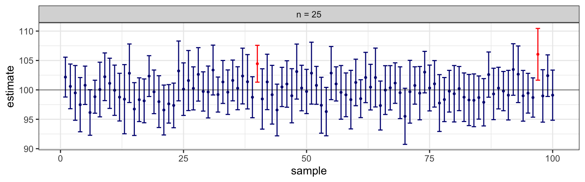
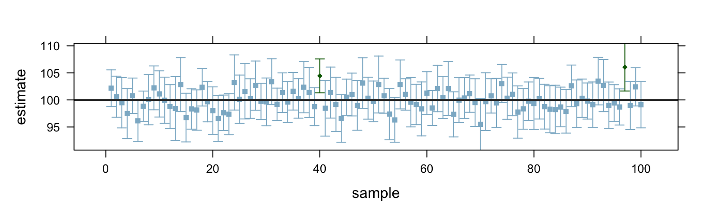
Notice that some of the samples have larger means (the dots) and some smaller means. Also some have wider intervals and some narrower (because \(s\) varies from sample to sample). But most of the intervals contain the estimand (100). A few do not.
In the long-run, 95% of the intervals should “cover” the estimand and 5% should fail to cover. 95% is referred to as the confidence level or coverage rate.
As we can see, the estimand is not always contained in the confidence interval. But, in a way that we will be able to make more formal later, a confidence interval is a range of plausible values for the estimand – values that are consistent with the data in a probabilistic sense. The level of confidence is related to how strong the evidence must be for us to declare that a value is not consistent with the data.
We can use other confidence levels by using a different critical value \(t_*\).
So the general form for our confidence interval is
\[ \mean x \pm t_* SE \]
Example 5.13 A 98% confidence interval, for example, requires a larger value of \(t_*\). If the sample size is \(n = 30\), then we use
qt(0.99, df = 29)[1] 2.462021Notice the use of 0.99 in this command. We want to find the limits of the central 98% of the standard normal distribution. If the central portion contains 98% of the distribution, then each tail contains 1%.
We could also have used the following to calculate \(t_*\).
qt(0.01, df = 29)[1] -2.462021Example 5.14 Q. Compute a 98% confidence interval for the mean weight of a dime based on our dimes data set.
A. We can do this by hand:
x_bar <- 2.258
t_star <- qt(0.99, df = 29); t_star[1] 2.462021SE <- 0.022/ sqrt(30); SE # standard error[1] 0.004016632ME <- t_star * SE; ME # margin of error[1] 0.009889034x_bar + c(-1,1) * ME[1] 2.248111 2.267889or let R do the work for us:
t.test( ~ mass, data = Dimes, conf.level = 0.98)
One Sample t-test
data: mass
t = 560.44, df = 29, p-value < 2.2e-16
alternative hypothesis: true mean is not equal to 0
98 percent confidence interval:
2.248313 2.268154
sample estimates:
mean of x
2.258233 confint(t.test( ~ mass, data = Dimes, conf.level = 0.98))The confidence intervals based on the \(t\)-distributions assume that the population is normal. The degree to which a statistical procedure works even when some or all of the assumptions used to derive its mathematical properties are not satisfied is referred to as the robustness of the procedure. The \(t\)-based confidence intervals are quite robust.
Quantifying robustness precisely is difficult because how well a procedure works may depend on many factors. The general principles are
The bigger the better.
The larger the sample size, the less it mattes what the population distribution is.
The more normal the better.
The closer the population is to a normal distribution, the smaller the sample sizes may be.
For assistance in particular applications, we offer the following rules of thumb.
If the population is normal, the confidence intervals achieve the stated coverage rate for all sample sizes.
But since small data sets provide very little indication of the shape of the population distribution, the normality assumption must be justified by something other than the data. (Perhaps other larger data sets collected in a similar fashion have shown that normality is a good assumption or perhaps there is some theoretical reason to accept the normality assumption.)
For modestly sized samples (\(15 \le n \le 40\)), the \(t\)-based confidence is acceptable as long as the distribution appears to be unimodal and is not strongly skewed.
For large sample size (\(n \ge 40\)), the \(t\)-procedure will work acceptably well for most unimodal distributions.
But keep in mind, if the distribution is strongly skewed, the mean might not be the best parameter to estimate.
Because both the sample mean and the sample variance are sensitive to outliers, one should proceed with caution when outliers are present.
Outliers that are due to mistakes and can be corrected, should be. Outliers that can be verified to be incorrect but cannot be corrected should be removed. It is not acceptable to remove an outlier just because you don’t want it in your data. But sometimes statisticians do “leave one out analysis” where they run the analysis with and without the outlier. If the conclusions are the same, then the conclusions can be safely drawn. But if the conclusions are different, likely additional data will be needed to resolve the differences.
Don’t forget: sometimes the outliers are the interesting part of the story. Determining what makes them different from the rest of the data may be the most important thing.
Exercise 5.1 Gamma distributions
Let \(X\) and \(Y\) be independent \(\Gamm(\texttt{shape} = 2, \texttt{scale} = 3)\) random variables.
Let \(S = X+Y\) and let \(D = X - Y\). Use simulations (with 5000 replications) and quantile-quantile plots to answer the following:
fitdistr().fitdistr().fitdistr().n <- 5000
X <- rgamma(n, shape = 2, scale = 3)
Y <- rgamma(n, shape = 2, scale = 3)
S <- X + Y
D <- X - Yfitdistr(S, "normal") mean sd
12.03111425 5.98150410
( 0.08459124) ( 0.05981504)gf_qq( ~ S)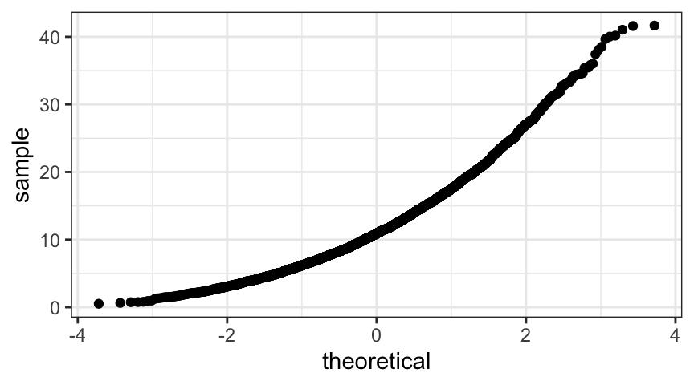
gf_density( ~ S)
fitdistr(S, "gamma") shape rate
3.99110223 0.33173169
(0.07671764) (0.00679521)gf_qq( ~ S, distribution = qgamma, dparams = list(shape = 4.04, rate = 0.333))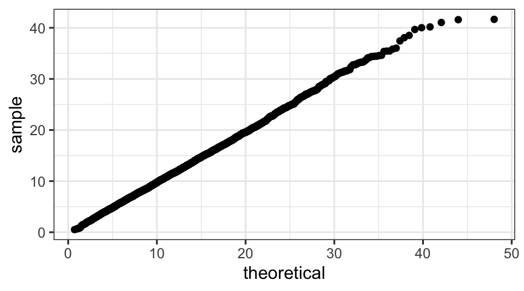
gf_density( ~ S)
The gamma distribution fits \(S\) much better than the normal does. But notice that the shape parameter is larger than the shape parameters for \(X\) and \(Y\).
fitdistr(D, "normal") mean sd
-0.05460492 6.15168032
( 0.08699790) ( 0.06151680)gf_qq( ~ D)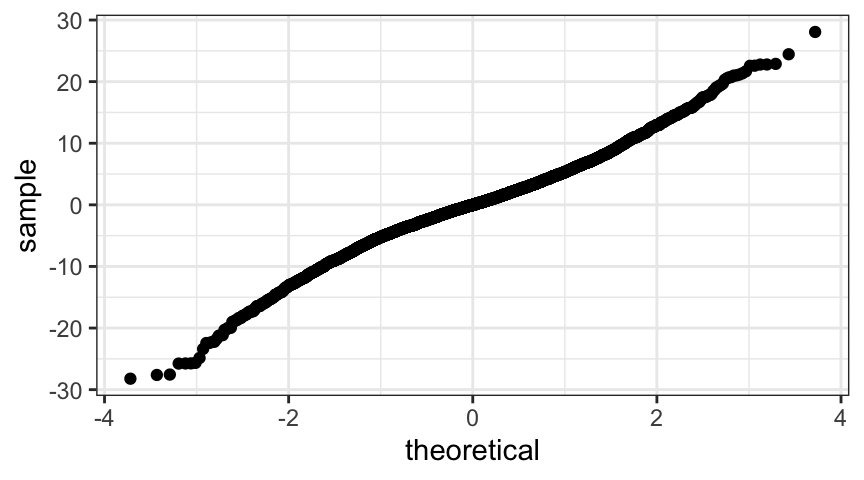
gf_density( ~ D)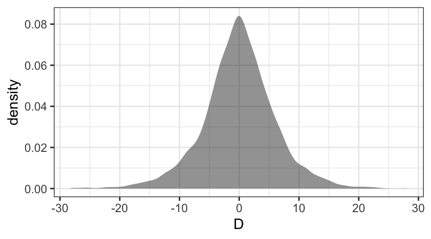
This time the distribution is symmetric, so the problems are not as obvious as for \(S\), but the normal quantile plots shows some clear curve (there is lots of data, so very little noise in this plot). The problem is that the shape is not like a normal distribution.
The density plot perhaps makes this clearer if you are not familiar with qq-plots.
Exercise 5.2 Normal probabilities
If \(X \sim \Norm(110, 15)\) and \(Y \sim \Norm(100, 20)\) are independent random variables:
1 - pnorm(140, mean = 110, sd = 15) # P(X > 140)[1] 0.022750131 - pnorm(140, mean = 100, sd = 20) # P(Y > 140)[1] 0.022750131 - pnorm(150, mean = 110, sd = 15) # P(X > 150)[1] 0.0038303811 - pnorm(150, mean = 100, sd = 20) # P(Y > 150)[1] 0.006209665\(X + Y \sim \Norm(210, 25 )\) because \(110 + 100 = 210\) and \(15^2 + 20^2 = 25^2\).
So \(\Prob(X + Y \ge 250)\) is
1 - pnorm(250, 210, 25) [1] 0.05479929\(X - Y \sim \Norm(10, 25 )\) because \(110 - 100 = 210\) and \(15^2 + 20^2 = 25^2\).
So \(\Prob(X - Y \ge 0)\) is
1 - pnorm(0, 10, 25) [1] 0.6554217Exercise 5.3 Linear Combinations
Suppose \(X\) and \(Y\) are independent random variables with means and standard deviations as listed below.
| mean | standard deviation | |
|---|---|---|
| \(X\) | 54 | 12 |
| \(Y\) | 48 | 9 |
What are the mean and standard deviation of each of the following:
# part a
c(mean = 54 + 48, sd= sqrt(12^2 + 9^2))mean sd
102 15 # part b
c(mean = 2 * 54, sd= 2 * 12)mean sd
108 24 # part c
c(mean = 2 * 54 + 3 * 48, sd= sqrt(2^2 * 12^2 + 3^2 * 9^2)) mean sd
252.00000 36.12478 # part d
c(mean = 2 * 54 - 3 * 48, sd= sqrt(2^2 * 12^2 + (-3)^2 * 9^2)) mean sd
-36.00000 36.12478 Exercise 5.4 Calvin heights
You are interested to know the mean height of male Calvin students. Assuming the standard deviation is similar to that of the population at large, we will assume \(\sigma = 2.8\) inches.
pnorm(1, mean = 0, sd = 2.8/sqrt(20)) - pnorm(-1, mean = 0, sd = 2.8/sqrt(20))[1] 0.889777n <- (2 * (2.8))^2; n[1] 31.36# double check:
n <- round(n); n # should have an integer[1] 31pnorm(1, mean = 0, sd = 2.8/sqrt(n)) - pnorm(-1, mean = 0, sd = 2.8/sqrt(n))[1] 0.9532422This can also be done by guessing and checking for the value of $n$ (sort of like the
guessing game where someone tells you "higher" or "lower" after each guess until
you converge on the number they have selected.
prob <- makeFun(pnorm(1, mean = 0, sd = 2.8/sqrt(n)) - pnorm(-1, mean = 0, sd = 2.8/sqrt(n)) ~ n)
prob(20)[1] 0.889777prob(40)[1] 0.9761023prob(30)[1] 0.9495527prob(32)[1] 0.9566482prob(31)[1] 0.9532422R can even automate this for us:
uniroot(makeFun(prob(n) - 0.95 ~ n), c(20, 40)) # look for a solution between 20 and 40$root
[1] 30.11704
$f.root
[1] 4.489753e-10
$iter
[1] 7
$init.it
[1] NA
$estim.prec
[1] 6.103516e-05We should round the answer, of course.
Exercise 5.5 Confidence interval for a mean
Give an approximate 95% confidence interval for a population mean \(\mu\) if the sample of size \(n = 25\) has mean \(\mean x = 8.5\) and the population standard deviation is \(\sigma = 1.7\).
SE <- 1.7 / sqrt(25) ; SE # standard error[1] 0.34ME <- 2 * SE; ME # margin of error[1] 0.688.5 + c(-1,1) * ME # approx 95<!-- CI -->[1] 7.82 9.18Exercise 5.6 Critical values
Determine the critical value \(t_*\) for each of the following confidence levels and sample sizes.
Solution. Here’s a fancy version that gets all the answers at once. (You didn’t need to know you could do it this way, but R is pretty handy this way.)
answers <- qt(c(.975, .975, .99, .95, .995, .975), df = c(3,23,14,19,11,122))
names(answers) <- letters[1:length(answers)]
answers a b c d e f
3.182446 2.068658 2.624494 1.729133 3.105807 1.979600 Exercise 5.7 Stride rate
Below is a normal-quantile plot and some summary information from a sample of the stride rates (strides per second) of healthy men.
t.test( ~ strideRate, data = ex07.37, conf.level = 0.98)
One Sample t-test
data: strideRate
t = 51.132, df = 19, p-value < 2.2e-16
alternative hypothesis: true mean is not equal to 0
98 percent confidence interval:
0.8795348 0.9714652
sample estimates:
mean of x
0.9255 The normal quantile plot is OK but not great. There are some flat spots in the plot indicating ties. This is probably because the number of steps was counted over a short length of time, so the underlying data is probably discrete – leading to the ties. But the distribution is unimodal and not heavily skewed. With a sample size of 20 we can probably proceed cautiously. (In practice, we might want to confirm the results with a method that doesn’t require such a strong normality assumption, but we don’t know any of those methods yet.)
Exercise 5.8 E-glass fiber
A random sample of size \(n = 8\) E-glass fiber test specimens of a certain type yielded a sample mean interfacial shear yield stress of 30.2 and a sample standard deviation of 3.1. Assuming that the population of interfacial shear yield stress measurements is approximately normal, compute a 95% confidence interval for the true average stress.
SE <- 3.1 / sqrt(8); SE # standard error[1] 1.096016t_star <- qt(0.975, df = 7); t_star # critical value[1] 2.364624me <- t_star * SE; me # margin of error[1] 2.59166530.2 + c(-1,1) * me # the 95<!-- confidence interval -->[1] 27.60834 32.79166Exercise 5.9 Polymerization of paper
The code below will create a data set containing a sample of observations of polymerization degree for some paper specimens. The data have been sorted to assist in typing. (If the data actually occurred in this order, we would probably be doing a different sort of analysis.)
Paper <-
tibble(
polymer =
c(418, 421, 421, 422, 425, 427, 431, 434,
437, 439, 446, 447, 448, 453, 454, 463, 465))gf_qq( ~ polymer, data = Paper)gf_density( ~ polymer, data = Paper)t.test( ~ polymer, data = Paper)
One Sample t-test
data: polymer
t = 119.33, df = 16, p-value < 2.2e-16
alternative hypothesis: true mean is not equal to 0
95 percent confidence interval:
430.5077 446.0805
sample estimates:
mean of x
438.2941 The tails of the sample distribution do not stretch quite as far as we would expect for a normal distribution, but the distribution is unimodal and not heavily skewed, so we are probably still OK.
Exercise 5.10 Alice and Bob
Using the same data, Alice constructs a 95% confidence interval and Bob creates a 98% confidence interval. Which interval will be wider? Why?
Solution. Bob’s interval will be wider because he used a higher level of confidence. (This will cause \(t_*\) to be larger. They will both have the same standard error.)
Exercise 5.11 Lab partners
Charlie and Denise are working on the same physics lab. Charlie leaves lab early and only has a sample size of \(n = 15\). Denise stays longer and has a sample size of \(n = 45\). Each of them construct a 95% confidence interval from their samples.
Solution. We would expect the two standard deviations to be fairly close, but since Denise has quite a bit more data, her standard error will be smaller. This will make her interval narrower. So Charlie’s interval will be wider, unless Charlie gets an unusually small standard deviation and Denise gets an unusually large standard deviation.
Exercise 5.12 Find an article
Find an article from the engineering or science literature that computes a confidence interval for a mean (be careful, you may see confidence intervals for many other parameters) and also reports the sample mean and standard deviation. Check their computation to see if you both get the same confidence interval. Give a full citation for the article you used.
Google scholar might be a useful tool for this. Or you might ask an engineering or physics professor for an appropriate engineering journal to page through in the library. Since the chances are small that two students will find the same article if working independently, I expect to see lots of different articles used for this problem.
If your article looks particularly interesting or contains statistical things that you don’t understand but would like to understand, let me know, and perhaps we can do something later in the semester with your article. It’s easiest to do this if you can give me a URL for locating the paper online.
Solution. Answers will vary.
Exercise 5.13 Defective parts
Even when things are running smoothly, 5% of the parts produced by a certain manufacturing process are defective.
Suppose you have a quality control procedure for testing parts to see if they are defective, but that the test procedure sometimes makes mistakes:
\[ \begin{aligned} \Prob(\mbox{fail test}) &= \Prob(\mbox{good and fail}) + \Prob(\mbox{bad and fail}) \\ & = \Prob(\mbox{good}) \Prob(\mbox{fail}\mid \mbox{good}) + \Prob(\mbox{bad}) \Prob(\mbox{fail}\mid \mbox{bad}) \\ &= 0.95 (0.10) + 0.05 (.80) = 0.095 + 0.04 = 0.135 = 13.5\% \end{aligned} \] c. If a part passes QC, the probability that it is defective drops from 5% to just over 1%:
\[ \begin{aligned} \Prob(\mbox{bad} \mid \mbox{pass}) &= \frac{ \Prob(\mbox{bad and pass})}{\Prob(\mbox{pass})} \\ & = \frac{ 0.05 (0.20) }{ 0.865 } = 0.01156 \end{aligned} \]
The cost to get this improvement in quality is the cost of the QC test plus the cost of discarding \(9.5\)% of good parts in the QC process.
\[ \Prob(\mbox{bad} \mid \mbox{fail}) = \Prob(\mbox{bad} and \mbox{fail}) = \Prob(\mbox{fail}) = 0.04 / (0.04 + 0.095) = 0.2962963 \]
0.04 / (0.04 + 0.095)[1] 0.2962963Exercise 5.14 What does the density look like?
Here is a normal quantile plot from a data set.
Sketch what a density plot of this same data would look like.
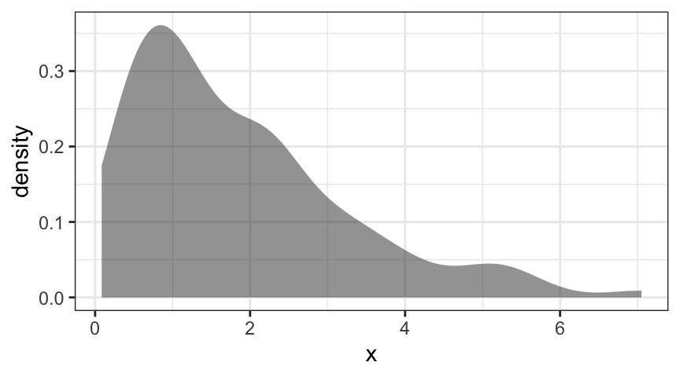
The important feature to get right is the direction of the skew.
Exercise 5.15 Create your own practice problems
You should know how to compute confidence intervals for a single quantitative variable both “by hand” and using t.test() if you have data. Here is a template problem you can use to practice both of these.
Length in the KidsFeet data set.df_stats() to compute some summary statistics.df_stats ( ~ length, data = KidsFeet)t.test()You can find other data sets using
data()You won’t run out of examples before you run out of energy for doing these.
df_stats( ~ length, data = KidsFeet)x_bar <- 24.72
n <- 39; n[1] 39s <- 1.32; s[1] 1.32SE <- s / sqrt(n) ; SE[1] 0.2113692t_star <- qt(0.95, df = 38) ; t_star[1] 1.685954me <- t_star * SE; me[1] 0.3563588confint(t.test( ~length, data = KidsFeet)) gf_qq( ~length, data = KidsFeet)The normal-quantile plot does not reveal any causes for concern, but we might be concerned that the distributions for boys and girls are different. Let’s do a graphical check to see if that is a problem.
gf_boxplot(length ~ sex, data = KidsFeet)gf_dens( ~ length, color = ~sex, linewidth = 1.5, data = KidsFeet)Indeed, it appears that the girls’ feet are on average a bit shorter, so perhaps we should create a confidence intervals separately for each group. Now you have two problems. You can get started with
df_stats(length ~ sex, data = KidsFeet)Exercise 5.16 Working with a pdf
The pdf for a continuous random variable \(X\) is
\[ f(x) = \begin{cases} 4(x - x^3) & \mbox{when } 0\le x \le 1 \\ 0 & \mbox{otherwise} \end{cases} \]
library(mosaicCalc)
f <- makeFun(4*(x-x^3) ~ x)
F <- antiD(f(x) ~ x)
xF <- antiD(x * f(x) ~ x)
xxF <- antiD(x^2 * f(x) ~ x)
F(1) - F(0) # should be 1[1] 1m <- xF(1) - xF(0); m # mean[1] 0.5333333xxF(1) - xxF(0) - m^2 # variance[1] 0.04888889Exercise 5.17 Working with a kernel
The kernel of a continuous distribution is given by \(k(x) = 4-x^2\) on the interval \([-2,2]\).
F <- antiD(4 - x^2 ~ x)
F(2) - F(-2) [1] 10.66667So the pdf is
\[ f(x) = \frac{4 - x^2}{10.6666667} \]
f <- makeFun((4 - x^2) / C ~ x, C = F(2) - F(-2))
integrate(f, -2, 2)1 with absolute error < 1.1e-14F <- antiD(f(x) ~ x)
F(2) - F(-2)[1] 1xF <- antiD(x*f(x) ~ x)
m <- xF(2) - xF(-2) # mean
xxF <- antiD(x*x*f(x) ~ x)
xxF(2) - xxF(-2) - m^2 # variance[1] 0.8Exercise 5.18 Gamma distributions
Let \(X \sim \Gamm(\texttt{shape} = 3, \texttt{rate} = 2)\).
gf_dist("gamma", params = list(shape = 3, rate = 2))pgamma(1, shape = 3, rate = 2)[1] 0.3233236pgamma(3, shape = 3, rate = 2) - pgamma(1, shape = 3, rate = 2)[1] 0.6147076F <- antiD(dgamma(x, shape = 3, rate = 2) ~ x)
F(Inf) - F(0) # should be 1.[1] 1xF <- antiD(x * dgamma(x, shape = 3, rate = 2) ~ x)
m <- xF(Inf) - xF(0); m[1] 1.5xxF <- antiD(x^2 * dgamma(x, shape = 3, rate = 2) ~ x)
xxF(Inf) - xxF(0)[1] 3xxF(Inf) - xxF(0) - m^2 # variance[1] 0.75Exercise 5.19 Linear combinations
Suppose \(X\) an \(Y\) are independent random variables with means and standard deviations as given in the following table.
| mean | standard deviation | |
|---|---|---|
| \(X\) | 40 | 3 |
| \(Y\) | 50 | 4 |
Determine the mean and standard deviation of the following:
Reminder: Expected value is another term for mean.
Solution. \(\E(X+Y) = \E(X) + \E(Y) = 40 + 50 = 90\).
\(\Var(X+Y) = \Var(X) + \Var(Y) = 3^2 + 4^2 = 5^2\). So standard deviation = \(5\).
\(\E(X-Y) = \E(X) - \E(Y) = 40 - 50 = -10\).
\(\Var(X-Y) = \Var(X + (-Y)) = \Var(X) + \Var(-Y) = 3^2 + 4^2 = 5^2\). So standard deviation = \(5\).
\(\E(\frac12 X+7) = \frac12\E(X) + 7 = 27\).
\(\Var(\frac12 X+7) = \frac14\Var(X) = \frac94\). So standard deviation = \(\sqrt{\frac94}\).
Exercise 5.20 Terminology review
Exercise 5.21 Critical flicker frequency
Critical flicker frequency (called Flicker in the data set below) is the lowest flicker rate at which the human eye can detect that a light source (from a florescent bulb or a computer screen, for example) is flickering. Knowing the cff is important for product manufacturing (since detectable flickering is annoying for the consumer). The command below loads data from from a 1973 study that attempted to determine whether the cff, which varies from person to person, is partially determined by eye color.
Flicker <- read.file("http://www.statsci.org/data/general/flicker.txt")Reading data with read.table()Create a plot that can be used to visualize the data. What does your plot suggest the answer might be? (Does eye color matter?)
Solution. Here are two possibilities:
gf_boxplot(Flicker ~ Colour, data = Flicker)gf_density( ~ Flicker, fill=~Colour, data = Flicker) |>
gf_refine(scale_fill_manual(values = c('steelblue', 'tan4', 'forestgreen')))The general trend appears to be that lighter colored eyes (if you consider blue to be lighter than green) appear to be able to detect higher flicker rates, but there is overlap among the groups.
Exercise 5.22 Difference between two means
Let \(\mean X_1\) be the distribution of sample means from a population with mean \(\mu_1\) and standard deviation \(\sigma_1\). Let \(\mean X_2\) be the distribution of sample means from a population with mean \(\mu_2\) and standard deviation \(\sigma_2\). What is the distribution of \(\mean X_1 - \mean X_2\)? (Hint: start by determining the distributions of \(\mean X_1\) and \(\mean X_2\), then use what we know about differences.)
Exercise 5.23 Difference between two proportions
Similar to the previous problem, we can work out the (approximate) sampling distribution for the difference between two proportions. Use the fact that the sampling distribution for a sample proportion is approximately \(\Norm\left(p, \sqrt{\frac{p(1-p)}{n}}\right)\) to work out the (approximate) sampling distribution for the difference between two sample proportions.
Exercise 5.24 Concrete beams
Below is the summary of some data from a study comparing two types of concrete beams by measuring their ultimate load (in kN).
| type | sample size | mean | standard deviation |
|---|---|---|---|
| fiberglass grid | 26 | 33.4 | 2.2 |
| commercial carbon grid | 26 | 42.8 | 4.3 |
Create a 95% confidence interval for the difference in the mean ultimate load for the two types of beam.
SE <- sqrt( 2.2^2 / 26 + 4.3^2 / 26); SE[1] 0.9472633tstar <- qt(0.975, df = 25); tstar # conservative[1] 2.05953942.8 - 33.4 + c(-1,1) * tstar * SE[1] 7.449075 11.350925Exercise 5.25 Fabric extensibility
The Devore7::ex9.23 data set has data on the extensibility (%) of two types of fabric, but it is arranged awkwardly. Let’s fix that:
library(tidyr)
Fabric <-
Devore7::ex09.23 |>
pivot_longer( everything(), names_to = "quality", values_to = "extensibility",
values_drop_na = TRUE)
head(Fabric) df_stats(extensibility ~ quality, data = Fabric)t.test() to compute the confidence interval. How do the degrees of freedom from t.test() compare with the upper and lower bounds we have for degrees of freedom? Which end of the range is it closer to? Why?Extensibility is related to the shape and drape when fabric is used to make clothing.
library(tidyr)
Fabric <-
Devore7::ex09.23 |>
pivot_longer( everything(), names_to = "quality", values_to = "extensibility",
values_drop_na = TRUE)
head(Fabric)df_stats(extensibility ~ quality, data = Fabric)t.test(extensibility ~ quality, data = Fabric)
Welch Two Sample t-test
data: extensibility by quality
t = -0.38011, df = 10.482, p-value = 0.7115
alternative hypothesis: true difference in means between group H and group P is not equal to 0
95 percent confidence interval:
-0.5403506 0.3820172
sample estimates:
mean in group H mean in group P
1.508333 1.587500 Exercise 5.26 A difference in proportions
A sample of parts from two factories was inspected. At factory A, 172 out of 213 were rated “highest quality”. At factory B, 184 out of 207 were rated “highest quality”.
prop.test(), then repeat with prop.test() and compare the results.prop.test( c(172, 184), c(184, 207)) |> confint()prop.test( c(172, 184), c(184, 207), correct = FALSE) |> confint()These results can be proved by setting up the appropriate integrals and rearranging them algebraically. In this case, one needs to know a bit about joint, marginal, and conditional distributions, so for the sake of time we will omit the proofs.↩︎
In fact more is known. The distribution of \(S^2\) is a member of the Gamma family of distributions.↩︎
Side note: the sample standard deviation is a biased estimator for the population standard deviation. (On average it will be too small.)↩︎